Finding data
The main assignment for this course will involve conducting your own data analysis and visualization using data of your choice.
That data is out there, somewhere, waiting for you…
What kind of data?
Data are most useful when they are in machine-readable formats
- .csv, .tsv, .txt, .ncdf, .jpg, .tiff, .xml, .json, .kml, .shp
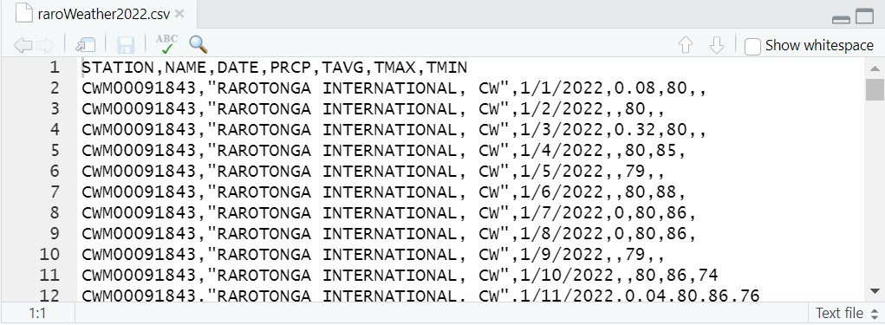
What kind of data?
Data are most useful when they are in non-proprietary, widely-used formats

Reliable sources
Primary data often come from government clearinghouses (.gov), research institutions (.edu), or from non-governmental organizations (.org)
Example 1
Published alongside research publications (Figshare, Zenodo, etc.)
Example 2
Data that you or someone you know collects
Example 3
Making better visualizations
Making better visualizations
Good visualizations can help a reader to better understand data and your interpretation of it.
Choose the right chart for the data
Maximize the data-to-ink ratio
Make deliberate design decisions
What kind of visualization?
The type of visualization that should be used depends on the kind of information being conveyed.
What kind of visualization?
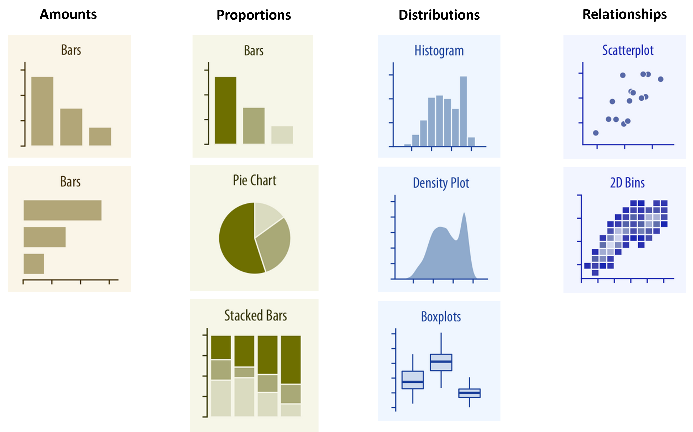Wilke, Claus. 2019. Fundamentals of Data Visualization
Bar charts and histograms
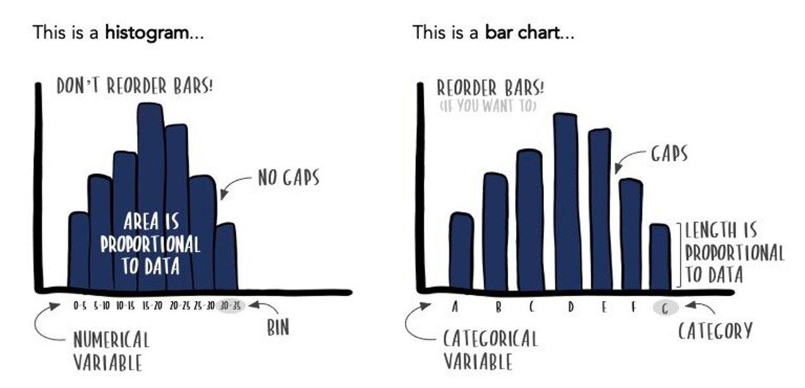https://www.storytellingwithdata.com/blog/2021/1/28/histograms-and-bar-charts
When not to use a pie chart
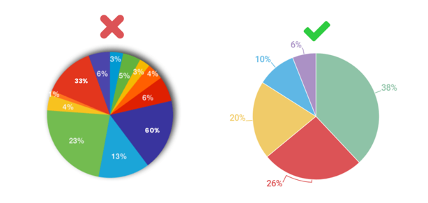
What kind of visualization?
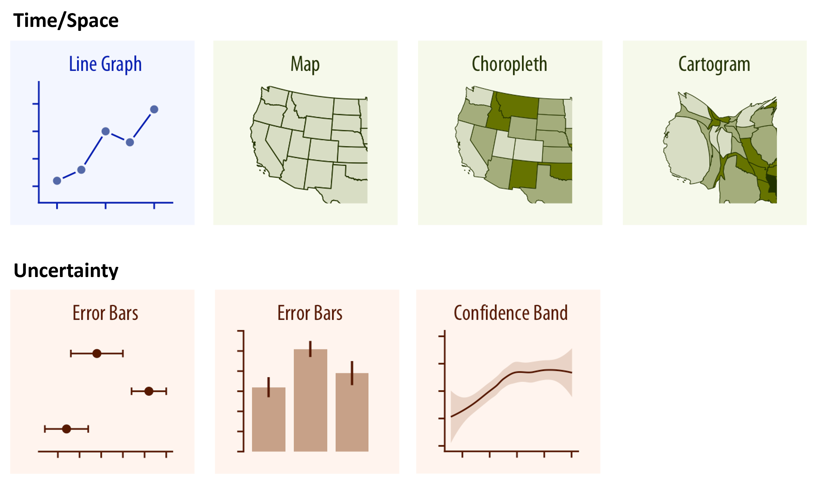Wilke, Claus. 2019. Fundamentals of Data Visualization
Data-ink
Data-ink (per Tufte 19831) refers to ink (or pixels) that, if erased, would reduce the information being presented.
Ideally, we want to maximize the ratio of data to ink.
Data-ink
Visualization with non-data ink.
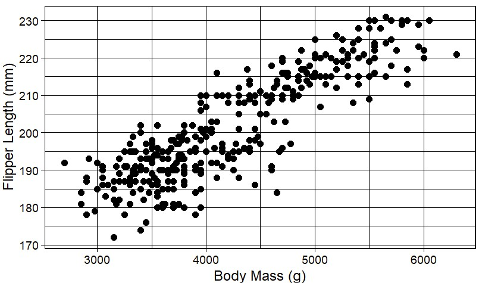
Data-ink
Removing some non-data ink.
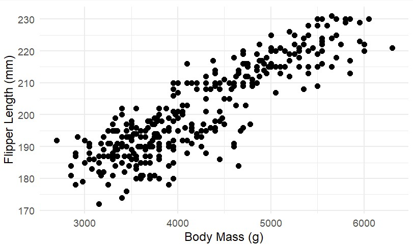
Data-ink
Removing too much non-data ink?
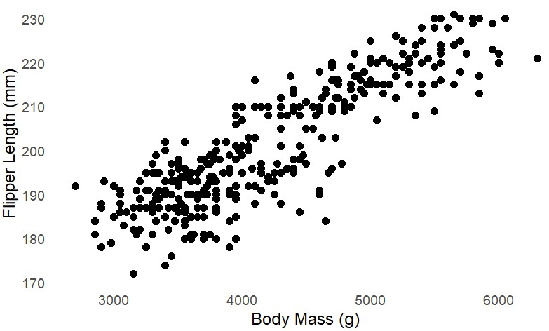
Activity: To erase or not to erase?

https://simplexct.com/data-ink-ratio
Chartjunk
The most egregious use of non-data ink is often referred to as chartjunk.
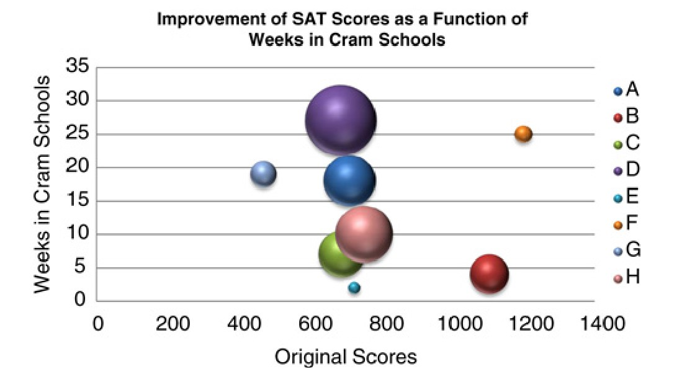Su, Yu-Sung. 2008. “It’s Easy to Produce Chartjunk Using Microsoft®Excel 2007 but Hard to Make Good Graphs.” https://doi.org/10.1016/j.csda.2008.03.007.
Chartjunk
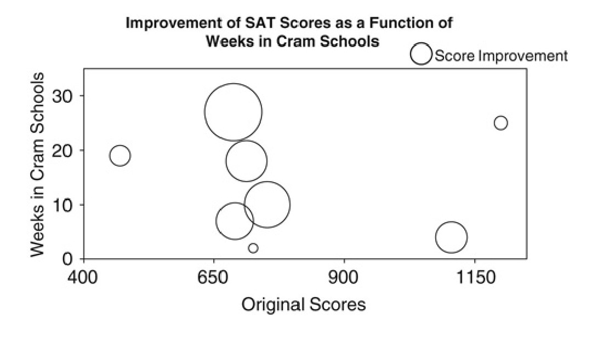Su, Yu-Sung. 2008. “It’s Easy to Produce Chartjunk Using Microsoft®Excel 2007 but Hard to Make Good Graphs.” https://doi.org/10.1016/j.csda.2008.03.007.
Data-ink: Can it go too far?
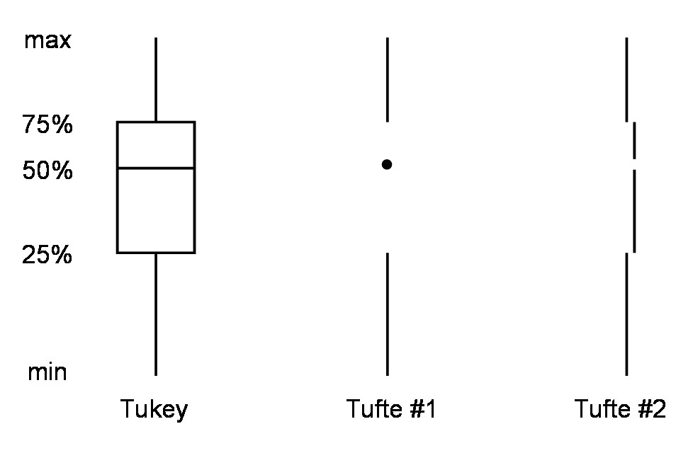
Activity: To erase or not to erase?
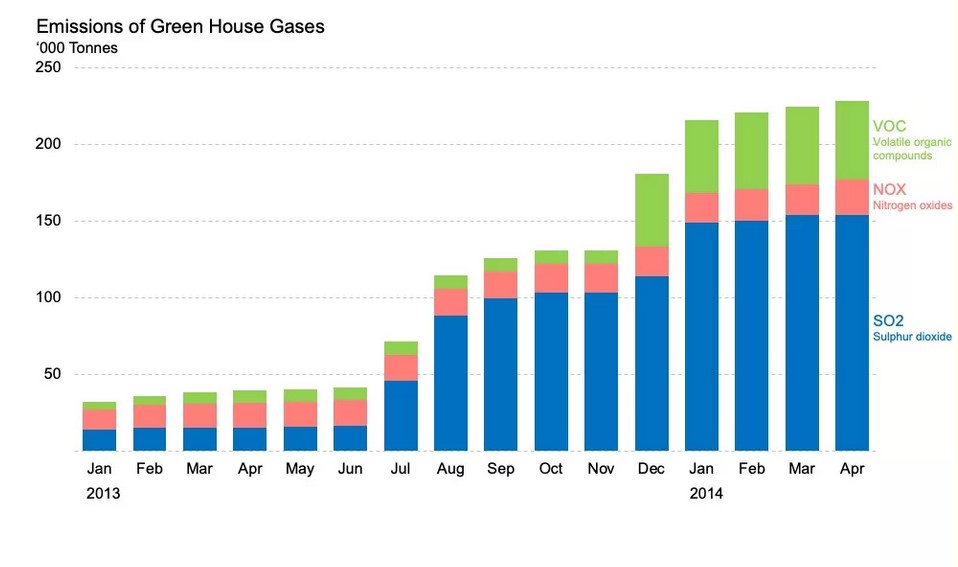https://simplexct.com/data-ink-ratio
Being deliberate about design
How does a design choice help someone understand the data?
Contrast: Do the visual elements provide adequate contrast to discern between them?
Clarity: Is the way the data are displayed making it possible to see it’s structure?
Highlighting: Should I use graphical elements to highlight the aspects I think are important?
Labeling: Is the labeling clear enough?
Contrast is clarity
Be sure foreground (plotting) colors are sufficiently different from background colors to aid readability.
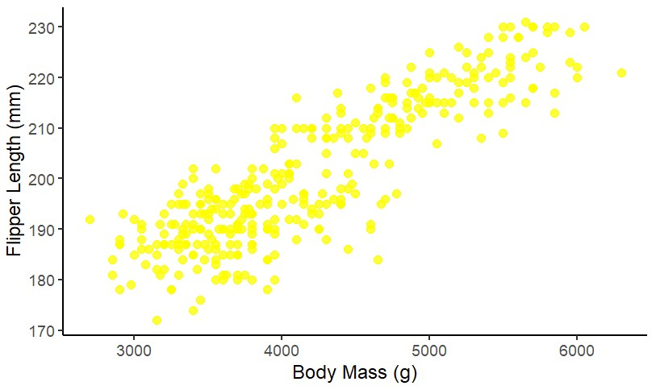
Contrast is clarity
When using colors, symbols, or line styles, be sure these are sufficiently different to distinguish between categories.
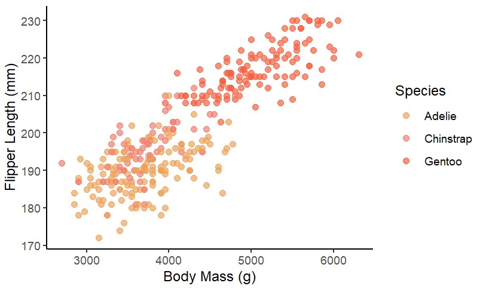
Using color effectively
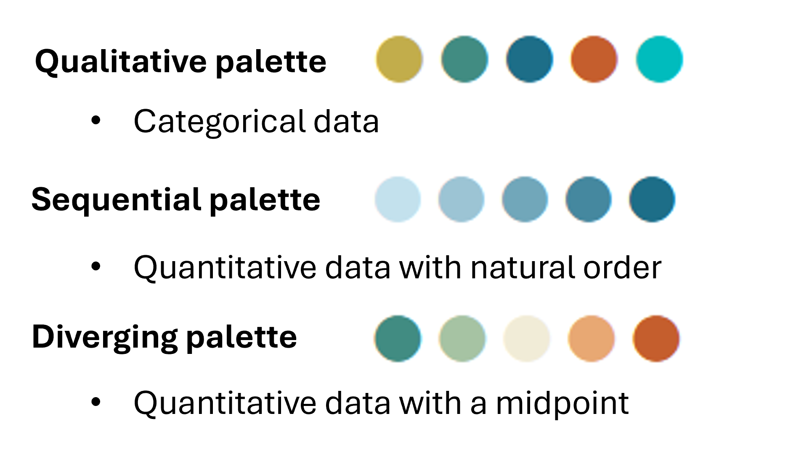
Accessibility considerations
Some design choices affect some audiences more than others
Color palette
Text and symbol sizes

Wilke, Claus. 2019. Fundamentals of Data Visualization
Improving readability
Small symbol and label sizes are difficult to read and leave too much white space
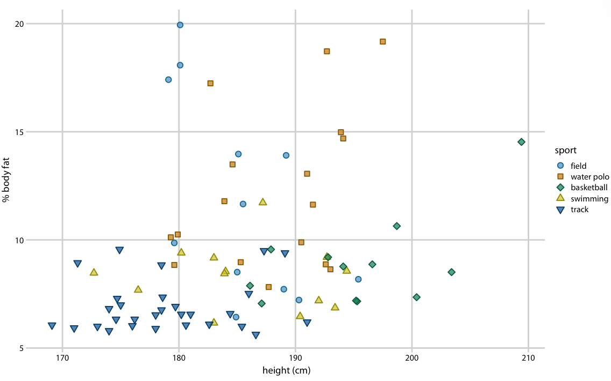Wilke, Claus. 2019. Fundamentals of Data Visualization
Improving readability
Generally speaking, aim for larger text and point sizes.

Wilke, Claus. 2019. Fundamentals of Data Visualization
Avoid being deliberately misleading
Changing the aspect ratio of the graphing space can give the impression that a patterns is more or less dramatic than it is.

https://eagereyes.org/blog/2013/banking-45-degrees
Avoid being deliberately misleading
Bar charts are used for comparing amounts; zooming in on the region of interest can exaggerate differences.

https://eagereyes.org/blog/2013/baselines
Avoid being deliberately misleading
What’s wrong here?

https://infolific.com/technology/internet/seo-lie-factor/
Next week
Wrangling and handling messy data with tidyr, plyr, and dplyr
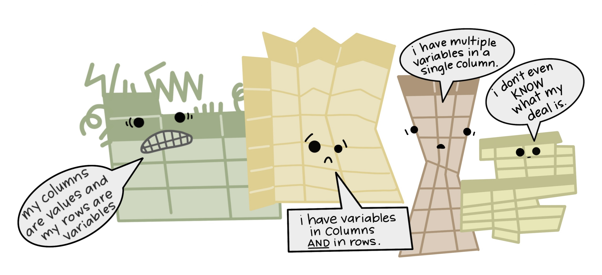https://openscapes.org/blog/2020-10-12-tidy-data/


/simplexct/images/image-tfe54.png)